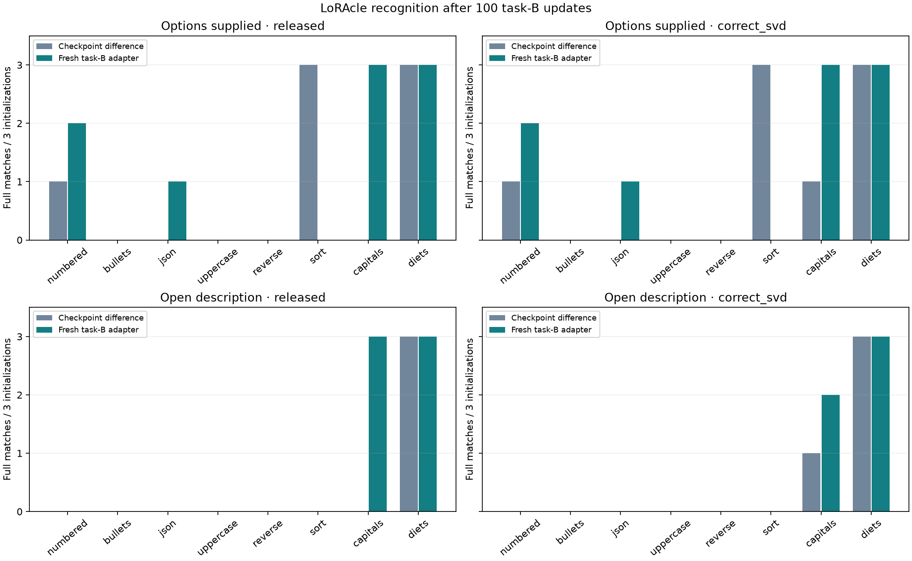
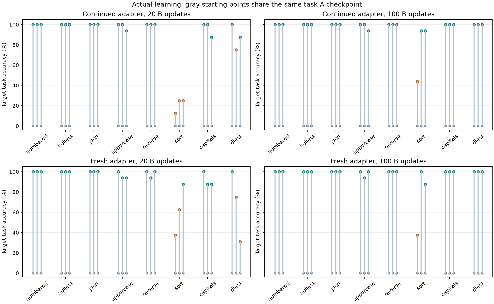
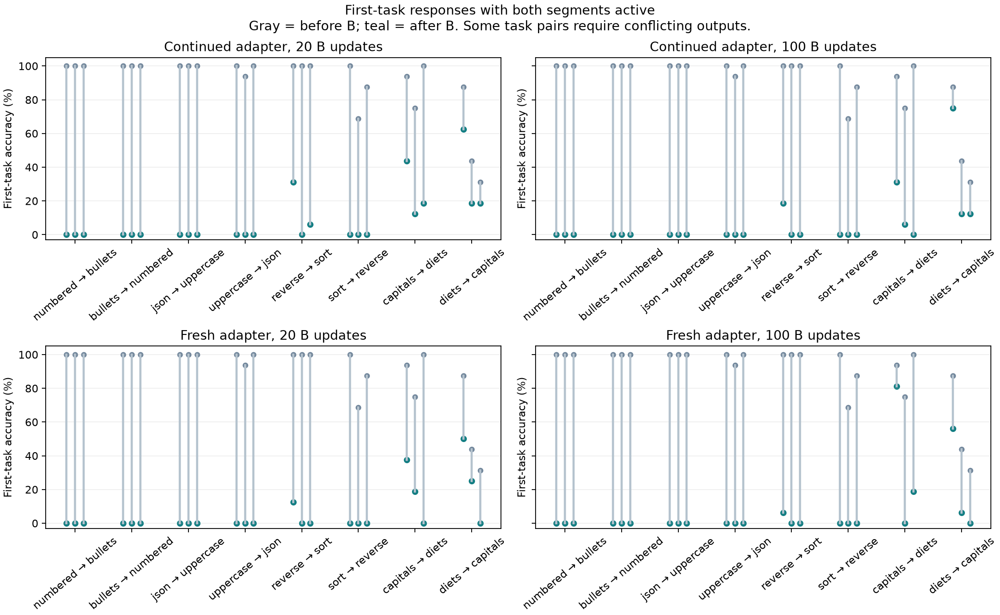
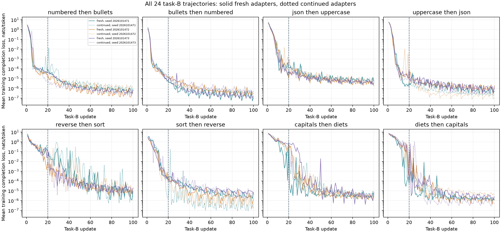

Does LoRAcle do better with a fresh adapter for each segment?
After 100 task-B updates, LoRAcle identifies 9/24 new tasks from fresh adapters, compared with 7/24 from continued-adapter checkpoint differences. That is 2 more full matches.
This is the fixed primary comparison: released encoding, supplied answer options, sentence-aware scoring, all 24 trajectories. The task-pair test gives p=0.375, or 0.75 after the planned correction.
What the results support
Fresh adapters give a small numerical improvement, but this study does not establish that they improve recognition overall. Five previously incorrect cases become correct, while three previously correct cases become incorrect. The result is 37.5% versus 29.2%, an 8.3 percentage-point difference.
The clearest specific improvement is invented-country capitals: recognition rises from 0/3 to 3/3. Invented-creature diets remain at 3/3. However, alphabetical sorting falls from 3/3 to 0/3 full matches (one new answer mentions sorting alongside another category). Bullets, uppercase and input reversal remain at 0/3. These task-specific observations are secondary development findings.
Without supplied options, full category matches rise from 3/24 to 6/24; all six new matches concern capitals or diets. The descriptions still add unsupported details. Recognizing a topic does not mean that the rest of the explanation is faithful.
The model learned the new task strongly in 23/24 trajectories under each method. Among these, fresh-adapter recognition is only 9/23. Failures are therefore not explained simply by an absence of learning.
We have finished this comparison. The evidence supports occasional useful topic recognition, with substantial remaining failures; it does not justify treating LoRAcle as a reliable account of each training segment.
What changed
Both methods start from exactly the same Qwen3-14B model after 20 updates on task A. For example, it first learns numbered lists. The earlier method continues training that adapter on bullets, then sends LoRAcle the difference between two checkpoints. The new method freezes the first adapter and trains a fresh rank 16 adapter on bullets. LoRAcle sees only the new adapter.
We reuse the audited task-A checkpoints. The old adapter stays as a frozen additive branch, avoiding rounding it into BF16 base weights. A zero new adapter preserves the starting model's outputs exactly. The new adapter is FP32, rank 16, alpha 32, across all seven projection types and 40 layers. There are 560 trainable tensors and 64,225,280 trainable parameters.
The new optimizer starts empty at the boundary. Task B gets 100 updates, with a checkpoint at 20, using the same 40 examples, row order, four examples per update, learning rate 0.0002 and gradient clipping. The full effective model now has two rank 16 branches. This changes capacity, parameterization, optimizer history and the interpreter's input representation together. Any gain supports this practical method; it does not isolate one cause of the previous errors.
What LoRAcle receives
Each new adapter is converted into 4,480 vectors of width 5,120, using 16 components for each of 280 weight matrices. No training text or generated examples are supplied. The earlier interval difference can have rank 32 and is truncated to 16; the new adapter is already rank 16. The same released encoding remains primary. The alternative SVD convention stays secondary.
Describe this model's behavior.
The other question begins:
Which change best matches these weights? Reply with one letter.
It offers the same shuffled eight task descriptions and an unknown option as before. The tasks are numbered lists, bullets, JSON arrays, uppercase, input reversal, alphabetical sorting, invented-country capitals and invented-creature diets. Each pair is trained in both orders, with three initializations. Description responses have a 128-token limit; choices have 16. Generation is greedy.
Recognition across all tasks

| Method | Question | Encoding | B updates | Full /24 | Partial /24 | Full among strong learning |
|---|---|---|---|---|---|---|
| fresh | choice | released | 20 | 10 | 0 | 7/20 |
| fresh | choice | released | 100 | 9 | 1 | 9/23 |
| fresh | choice | correct_svd | 20 | 10 | 0 | 7/20 |
| fresh | choice | correct_svd | 100 | 9 | 1 | 9/23 |
| fresh | description | released | 20 | 3 | 0 | 1/20 |
| fresh | description | released | 100 | 6 | 0 | 6/23 |
| fresh | description | correct_svd | 20 | 4 | 0 | 2/20 |
| fresh | description | correct_svd | 100 | 5 | 0 | 5/23 |
| continued | choice | released | 20 | 6 | 0 | 4/20 |
| continued | choice | released | 100 | 7 | 0 | 6/23 |
| continued | choice | correct_svd | 20 | 7 | 0 | 4/20 |
| continued | choice | correct_svd | 100 | 8 | 0 | 7/23 |
| continued | description | released | 20 | 3 | 0 | 2/20 |
| continued | description | released | 100 | 3 | 1 | 3/23 |
| continued | description | correct_svd | 20 | 3 | 0 | 2/20 |
| continued | description | correct_svd | 100 | 4 | 0 | 4/23 |
Every initialization
| Method | Question | Encoding | B updates | 2026101471 | 2026101472 | 2026101473 |
|---|---|---|---|---|---|---|
| fresh | choice | released | 20 | 3/8 | 4/8 | 3/8 |
| fresh | choice | released | 100 | 3/8 | 3/8 | 3/8 |
| fresh | choice | correct_svd | 20 | 3/8 | 4/8 | 3/8 |
| fresh | choice | correct_svd | 100 | 3/8 | 3/8 | 3/8 |
| fresh | description | released | 20 | 1/8 | 1/8 | 1/8 |
| fresh | description | released | 100 | 2/8 | 2/8 | 2/8 |
| fresh | description | correct_svd | 20 | 2/8 | 1/8 | 1/8 |
| fresh | description | correct_svd | 100 | 2/8 | 1/8 | 2/8 |
| continued | choice | released | 20 | 2/8 | 2/8 | 2/8 |
| continued | choice | released | 100 | 3/8 | 2/8 | 2/8 |
| continued | choice | correct_svd | 20 | 3/8 | 2/8 | 2/8 |
| continued | choice | correct_svd | 100 | 4/8 | 2/8 | 2/8 |
| continued | description | released | 20 | 1/8 | 1/8 | 1/8 |
| continued | description | released | 100 | 1/8 | 1/8 | 1/8 |
| continued | description | correct_svd | 20 | 1/8 | 1/8 | 1/8 |
| continued | description | correct_svd | 100 | 2/8 | 1/8 | 1/8 |
A full match requires the sole correct task category. Sentence answers count. Partial matches are kept separate. The assistant directly judged all 292 responses using the fixed rubric and masked deck, then locked labels before joining targets or interpreting new behavior. Prior familiarity prevents fully independent blindness. Topic recognition does not validate invented details in a description.
Original letter-parser diagnostic
| Method | Encoding | B updates | Saved letter-parser matches /24 | No parsed letter /24 |
|---|---|---|---|---|
| continued | released | 20 | 0 | 24 |
| continued | released | 100 | 0 | 24 |
| continued | correct_svd | 20 | 0 | 24 |
| continued | correct_svd | 100 | 0 | 24 |
| fresh | released | 20 | 0 | 24 |
| fresh | released | 100 | 0 | 24 |
| fresh | correct_svd | 20 | 0 | 24 |
| fresh | correct_svd | 100 | 0 | 24 |
These are the parser fields saved by the frozen worker. They are diagnostic only; the main scores use the locked sentence-aware judgments above.
What the target model actually learned

Gray points are the shared starting model. Teal endpoints meet the descriptive strong-learning rule: at least 80% accuracy and a gain of at least 50 percentage points. Orange endpoints do not. All 24 cases remain in the main comparison, including weak learning.
Every trajectory: target behavior, content, first-task retention and quality
| Method | Trajectory | B updates | B before % | B after % | Content % | First task after % | Controls % | Truncated % | Empty % | Mean tokens |
|---|---|---|---|---|---|---|---|---|---|---|
| continued | s2026101471-p0-o0 | 20 | 0.0 | 100.0 | 100.0 | 0.0 | 0.0 | 0.0 | 0.0 | 9.7 |
| continued | s2026101471-p0-o0 | 100 | 0.0 | 100.0 | 100.0 | 0.0 | 0.0 | 0.0 | 0.0 | 9.7 |
| continued | s2026101471-p0-o1 | 20 | 0.0 | 100.0 | 100.0 | 0.0 | 0.0 | 0.0 | 0.0 | 12.7 |
| continued | s2026101471-p0-o1 | 100 | 0.0 | 100.0 | 100.0 | 0.0 | 0.0 | 0.0 | 0.0 | 12.7 |
| continued | s2026101471-p1-o0 | 20 | 0.0 | 100.0 | 100.0 | 0.0 | 0.0 | 0.0 | 0.0 | 9.8 |
| continued | s2026101471-p1-o0 | 100 | 0.0 | 100.0 | 100.0 | 0.0 | 0.0 | 0.0 | 0.0 | 9.8 |
| continued | s2026101471-p1-o1 | 20 | 0.0 | 100.0 | 100.0 | 0.0 | 0.0 | 0.0 | 0.0 | 12.0 |
| continued | s2026101471-p1-o1 | 100 | 0.0 | 100.0 | 100.0 | 0.0 | 0.0 | 0.0 | 0.0 | 12.0 |
| continued | s2026101471-p2-o0 | 20 | 0.0 | 12.5 | 100.0 | 31.2 | 100.0 | 0.0 | 0.0 | 7.4 |
| continued | s2026101471-p2-o0 | 100 | 0.0 | 43.8 | 100.0 | 18.8 | 100.0 | 0.0 | 0.0 | 7.3 |
| continued | s2026101471-p2-o1 | 20 | 0.0 | 100.0 | 100.0 | 0.0 | 100.0 | 0.0 | 0.0 | 7.4 |
| continued | s2026101471-p2-o1 | 100 | 0.0 | 100.0 | 100.0 | 0.0 | 100.0 | 0.0 | 0.0 | 7.4 |
| continued | s2026101471-p3-o0 | 20 | 0.0 | 100.0 | 100.0 | 43.8 | 12.5 | 0.0 | 0.0 | 3.1 |
| continued | s2026101471-p3-o0 | 100 | 0.0 | 100.0 | 100.0 | 31.2 | 12.5 | 0.0 | 0.0 | 3.1 |
| continued | s2026101471-p3-o1 | 20 | 0.0 | 100.0 | 100.0 | 62.5 | 100.0 | 0.0 | 0.0 | 3.9 |
| continued | s2026101471-p3-o1 | 100 | 0.0 | 100.0 | 100.0 | 75.0 | 100.0 | 0.0 | 0.0 | 3.9 |
| continued | s2026101472-p0-o0 | 20 | 0.0 | 100.0 | 100.0 | 0.0 | 0.0 | 0.0 | 0.0 | 9.7 |
| continued | s2026101472-p0-o0 | 100 | 0.0 | 100.0 | 100.0 | 0.0 | 0.0 | 0.0 | 0.0 | 9.7 |
| continued | s2026101472-p0-o1 | 20 | 0.0 | 100.0 | 100.0 | 0.0 | 0.0 | 0.0 | 0.0 | 12.7 |
| continued | s2026101472-p0-o1 | 100 | 0.0 | 100.0 | 100.0 | 0.0 | 0.0 | 0.0 | 0.0 | 12.7 |
| continued | s2026101472-p1-o0 | 20 | 0.0 | 100.0 | 100.0 | 0.0 | 0.0 | 0.0 | 0.0 | 9.9 |
| continued | s2026101472-p1-o0 | 100 | 0.0 | 100.0 | 100.0 | 0.0 | 0.0 | 0.0 | 0.0 | 9.9 |
| continued | s2026101472-p1-o1 | 20 | 0.0 | 100.0 | 100.0 | 0.0 | 75.0 | 0.0 | 0.0 | 12.0 |
| continued | s2026101472-p1-o1 | 100 | 0.0 | 100.0 | 100.0 | 0.0 | 0.0 | 0.0 | 0.0 | 12.0 |
| continued | s2026101472-p2-o0 | 20 | 0.0 | 25.0 | 93.8 | 0.0 | 100.0 | 0.0 | 0.0 | 6.9 |
| continued | s2026101472-p2-o0 | 100 | 0.0 | 93.8 | 100.0 | 0.0 | 100.0 | 0.0 | 0.0 | 7.2 |
| continued | s2026101472-p2-o1 | 20 | 0.0 | 100.0 | 100.0 | 0.0 | 87.5 | 0.0 | 0.0 | 7.4 |
| continued | s2026101472-p2-o1 | 100 | 0.0 | 100.0 | 100.0 | 0.0 | 62.5 | 0.0 | 0.0 | 7.4 |
| continued | s2026101472-p3-o0 | 20 | 0.0 | 75.0 | 75.0 | 12.5 | 50.0 | 0.0 | 0.0 | 3.0 |
| continued | s2026101472-p3-o0 | 100 | 0.0 | 100.0 | 100.0 | 6.2 | 0.0 | 0.0 | 0.0 | 3.1 |
| continued | s2026101472-p3-o1 | 20 | 0.0 | 100.0 | 100.0 | 18.8 | 100.0 | 0.0 | 0.0 | 3.9 |
| continued | s2026101472-p3-o1 | 100 | 0.0 | 100.0 | 100.0 | 12.5 | 100.0 | 0.0 | 0.0 | 3.9 |
| continued | s2026101473-p0-o0 | 20 | 0.0 | 100.0 | 100.0 | 0.0 | 0.0 | 0.0 | 0.0 | 9.7 |
| continued | s2026101473-p0-o0 | 100 | 0.0 | 100.0 | 100.0 | 0.0 | 0.0 | 0.0 | 0.0 | 9.7 |
| continued | s2026101473-p0-o1 | 20 | 0.0 | 100.0 | 100.0 | 0.0 | 0.0 | 0.0 | 0.0 | 12.7 |
| continued | s2026101473-p0-o1 | 100 | 0.0 | 100.0 | 100.0 | 0.0 | 0.0 | 0.0 | 0.0 | 12.7 |
| continued | s2026101473-p1-o0 | 20 | 0.0 | 93.8 | 100.0 | 0.0 | 25.0 | 0.0 | 0.0 | 9.6 |
| continued | s2026101473-p1-o0 | 100 | 0.0 | 93.8 | 100.0 | 0.0 | 0.0 | 0.0 | 0.0 | 9.8 |
| continued | s2026101473-p1-o1 | 20 | 0.0 | 100.0 | 100.0 | 0.0 | 0.0 | 0.0 | 0.0 | 12.0 |
| continued | s2026101473-p1-o1 | 100 | 0.0 | 100.0 | 100.0 | 0.0 | 0.0 | 0.0 | 0.0 | 12.0 |
| continued | s2026101473-p2-o0 | 20 | 0.0 | 25.0 | 100.0 | 6.2 | 100.0 | 0.0 | 0.0 | 6.9 |
| continued | s2026101473-p2-o0 | 100 | 0.0 | 93.8 | 100.0 | 0.0 | 100.0 | 0.0 | 0.0 | 7.2 |
| continued | s2026101473-p2-o1 | 20 | 0.0 | 100.0 | 100.0 | 0.0 | 87.5 | 0.0 | 0.0 | 7.4 |
| continued | s2026101473-p2-o1 | 100 | 0.0 | 100.0 | 100.0 | 0.0 | 100.0 | 0.0 | 0.0 | 7.4 |
| continued | s2026101473-p3-o0 | 20 | 0.0 | 87.5 | 87.5 | 18.8 | 62.5 | 0.0 | 0.0 | 3.2 |
| continued | s2026101473-p3-o0 | 100 | 0.0 | 100.0 | 100.0 | 0.0 | 0.0 | 0.0 | 0.0 | 3.1 |
| continued | s2026101473-p3-o1 | 20 | 0.0 | 87.5 | 87.5 | 18.8 | 87.5 | 0.0 | 0.0 | 4.0 |
| continued | s2026101473-p3-o1 | 100 | 0.0 | 100.0 | 100.0 | 12.5 | 87.5 | 0.0 | 0.0 | 3.9 |
| fresh | s2026101471-p0-o0 | 20 | 0.0 | 100.0 | 100.0 | 0.0 | 0.0 | 0.0 | 0.0 | 9.7 |
| fresh | s2026101471-p0-o0 | 100 | 0.0 | 100.0 | 100.0 | 0.0 | 0.0 | 0.0 | 0.0 | 9.7 |
| fresh | s2026101471-p0-o1 | 20 | 0.0 | 100.0 | 100.0 | 0.0 | 0.0 | 0.0 | 0.0 | 12.7 |
| fresh | s2026101471-p0-o1 | 100 | 0.0 | 100.0 | 100.0 | 0.0 | 0.0 | 0.0 | 0.0 | 12.7 |
| fresh | s2026101471-p1-o0 | 20 | 0.0 | 100.0 | 100.0 | 0.0 | 0.0 | 0.0 | 0.0 | 9.8 |
| fresh | s2026101471-p1-o0 | 100 | 0.0 | 100.0 | 100.0 | 0.0 | 0.0 | 0.0 | 0.0 | 9.8 |
| fresh | s2026101471-p1-o1 | 20 | 0.0 | 100.0 | 100.0 | 0.0 | 0.0 | 0.0 | 0.0 | 12.0 |
| fresh | s2026101471-p1-o1 | 100 | 0.0 | 100.0 | 100.0 | 0.0 | 0.0 | 0.0 | 0.0 | 12.0 |
| fresh | s2026101471-p2-o0 | 20 | 0.0 | 37.5 | 100.0 | 12.5 | 75.0 | 0.0 | 0.0 | 7.1 |
| fresh | s2026101471-p2-o0 | 100 | 0.0 | 37.5 | 100.0 | 6.2 | 100.0 | 0.0 | 0.0 | 7.0 |
| fresh | s2026101471-p2-o1 | 20 | 0.0 | 100.0 | 100.0 | 0.0 | 0.0 | 0.0 | 0.0 | 7.4 |
| fresh | s2026101471-p2-o1 | 100 | 0.0 | 100.0 | 100.0 | 0.0 | 0.0 | 0.0 | 0.0 | 7.4 |
| fresh | s2026101471-p3-o0 | 20 | 0.0 | 100.0 | 100.0 | 37.5 | 75.0 | 0.0 | 0.0 | 3.1 |
| fresh | s2026101471-p3-o0 | 100 | 0.0 | 100.0 | 100.0 | 81.2 | 100.0 | 0.0 | 0.0 | 3.1 |
| fresh | s2026101471-p3-o1 | 20 | 0.0 | 100.0 | 100.0 | 50.0 | 100.0 | 0.0 | 0.0 | 3.9 |
| fresh | s2026101471-p3-o1 | 100 | 0.0 | 100.0 | 100.0 | 56.2 | 100.0 | 0.0 | 0.0 | 3.9 |
| fresh | s2026101472-p0-o0 | 20 | 0.0 | 100.0 | 100.0 | 0.0 | 0.0 | 0.0 | 0.0 | 9.7 |
| fresh | s2026101472-p0-o0 | 100 | 0.0 | 100.0 | 100.0 | 0.0 | 0.0 | 0.0 | 0.0 | 9.7 |
| fresh | s2026101472-p0-o1 | 20 | 0.0 | 100.0 | 100.0 | 0.0 | 0.0 | 0.0 | 0.0 | 12.7 |
| fresh | s2026101472-p0-o1 | 100 | 0.0 | 100.0 | 100.0 | 0.0 | 0.0 | 0.0 | 0.0 | 12.7 |
| fresh | s2026101472-p1-o0 | 20 | 0.0 | 93.8 | 93.8 | 0.0 | 0.0 | 0.0 | 0.0 | 9.8 |
| fresh | s2026101472-p1-o0 | 100 | 0.0 | 93.8 | 93.8 | 0.0 | 0.0 | 0.0 | 0.0 | 9.8 |
| fresh | s2026101472-p1-o1 | 20 | 0.0 | 100.0 | 100.0 | 0.0 | 0.0 | 0.0 | 0.0 | 12.0 |
| fresh | s2026101472-p1-o1 | 100 | 0.0 | 100.0 | 100.0 | 0.0 | 0.0 | 0.0 | 0.0 | 12.0 |
| fresh | s2026101472-p2-o0 | 20 | 0.0 | 62.5 | 100.0 | 0.0 | 100.0 | 0.0 | 0.0 | 7.1 |
| fresh | s2026101472-p2-o0 | 100 | 0.0 | 100.0 | 100.0 | 0.0 | 100.0 | 0.0 | 0.0 | 7.2 |
| fresh | s2026101472-p2-o1 | 20 | 0.0 | 93.8 | 100.0 | 0.0 | 100.0 | 0.0 | 0.0 | 7.4 |
| fresh | s2026101472-p2-o1 | 100 | 0.0 | 100.0 | 100.0 | 0.0 | 100.0 | 0.0 | 0.0 | 7.4 |
| fresh | s2026101472-p3-o0 | 20 | 0.0 | 75.0 | 75.0 | 18.8 | 62.5 | 0.0 | 0.0 | 3.0 |
| fresh | s2026101472-p3-o0 | 100 | 0.0 | 100.0 | 100.0 | 0.0 | 0.0 | 0.0 | 0.0 | 3.1 |
| fresh | s2026101472-p3-o1 | 20 | 0.0 | 87.5 | 87.5 | 25.0 | 100.0 | 0.0 | 0.0 | 3.9 |
| fresh | s2026101472-p3-o1 | 100 | 0.0 | 100.0 | 100.0 | 6.2 | 100.0 | 0.0 | 0.0 | 3.9 |
| fresh | s2026101473-p0-o0 | 20 | 0.0 | 100.0 | 100.0 | 0.0 | 0.0 | 0.0 | 0.0 | 9.7 |
| fresh | s2026101473-p0-o0 | 100 | 0.0 | 100.0 | 100.0 | 0.0 | 0.0 | 0.0 | 0.0 | 9.7 |
| fresh | s2026101473-p0-o1 | 20 | 0.0 | 100.0 | 100.0 | 0.0 | 0.0 | 0.0 | 0.0 | 12.7 |
| fresh | s2026101473-p0-o1 | 100 | 0.0 | 100.0 | 100.0 | 0.0 | 0.0 | 0.0 | 0.0 | 12.7 |
| fresh | s2026101473-p1-o0 | 20 | 0.0 | 93.8 | 93.8 | 0.0 | 0.0 | 0.0 | 0.0 | 9.8 |
| fresh | s2026101473-p1-o0 | 100 | 0.0 | 100.0 | 100.0 | 0.0 | 0.0 | 0.0 | 0.0 | 9.9 |
| fresh | s2026101473-p1-o1 | 20 | 0.0 | 100.0 | 100.0 | 0.0 | 0.0 | 0.0 | 0.0 | 12.0 |
| fresh | s2026101473-p1-o1 | 100 | 0.0 | 100.0 | 100.0 | 0.0 | 0.0 | 0.0 | 0.0 | 12.0 |
| fresh | s2026101473-p2-o0 | 20 | 0.0 | 87.5 | 100.0 | 0.0 | 100.0 | 0.0 | 0.0 | 7.2 |
| fresh | s2026101473-p2-o0 | 100 | 0.0 | 87.5 | 100.0 | 0.0 | 100.0 | 0.0 | 0.0 | 7.2 |
| fresh | s2026101473-p2-o1 | 20 | 0.0 | 100.0 | 100.0 | 0.0 | 100.0 | 0.0 | 0.0 | 7.4 |
| fresh | s2026101473-p2-o1 | 100 | 0.0 | 100.0 | 100.0 | 0.0 | 100.0 | 0.0 | 0.0 | 7.4 |
| fresh | s2026101473-p3-o0 | 20 | 0.0 | 31.2 | 31.2 | 0.0 | 0.0 | 0.0 | 0.0 | 3.0 |
| fresh | s2026101473-p3-o0 | 100 | 0.0 | 100.0 | 100.0 | 18.8 | 100.0 | 0.0 | 0.0 | 3.1 |
| fresh | s2026101473-p3-o1 | 20 | 0.0 | 87.5 | 87.5 | 0.0 | 100.0 | 0.0 | 0.0 | 4.0 |
| fresh | s2026101473-p3-o1 | 100 | 0.0 | 100.0 | 100.0 | 0.0 | 87.5 | 0.0 | 0.0 | 3.9 |
The first-task and new-task formats sometimes conflict on the same prompt. Lower first-task accuracy can therefore reflect the intended behavior change. These toy checks do not establish broad capability preservation.


Training losses are measured on repeated training examples. Held-out behavior is shown separately above.
Could the comparison be chance?
| Planned test | Statistic | Assignments | One-sided p | Holm p, 3 tests |
|---|---|---|---|---|
| all_categories | 9 | 40320 | 0.0081349 | 0.024405 |
| within_training_pairs | 9 | 16 | 0.5 | 0.75 |
| paired_method_swap_by_four_task_pairs | 2 | 16 | 0.375 | 0.75 |
The global category-shuffle result is evidence of some association between weights and task labels (Holm-adjusted p=0.0244). It does not establish that fresh adapters beat checkpoint differences: that paired comparison has adjusted p=0.75. Distinguishing the two tasks within each training pair also does not clear the planned test (adjusted p=0.75).
The global category permutation is shared across seeds. The within-pair test swaps labels in each of four task pairs. The paired method test swaps fresh and continued scores by task pair, keeping both orders and all seeds together. Holm correction covers these three planned tests.
The two task-pair tests have 16 assignments, giving a minimum one-sided p of 0.0625. Power is limited. We do not treat 24 trajectories as 24 independent tasks. The tests assume exchangeability under their nulls; training categories were not randomly assigned.
Controls
| Method | Control | Encoding | Question | N | Categories asserted | Statuses |
|---|---|---|---|---|---|---|
| fresh | permuted | released | choice | 24 | {'diets': 3, 'capitals': 3, 'reverse': 2, 'numbered': 3, 'json': 4, 'sort': 4, 'bullets': 3} | {'specific': 22, 'vague': 2} |
| fresh | permuted | released | description | 24 | {'sort': 1, 'capitals': 1, 'diets': 3} | {'vague': 13, 'specific': 5, 'other': 6} |
| fresh | permuted | correct_svd | choice | 24 | {'diets': 3, 'capitals': 3, 'numbered': 4, 'sort': 5, 'bullets': 2, 'json': 5, 'reverse': 1} | {'specific': 23, 'vague': 1} |
| fresh | permuted | correct_svd | description | 24 | {'diets': 3, 'json': 1, 'capitals': 1} | {'other': 7, 'specific': 5, 'vague': 12} |
| fresh | zero | released | choice | 1 | {'numbered': 1} | {'specific': 1} |
| fresh | zero | released | description | 1 | {} | {'other': 1} |
| fresh | zero | correct_svd | choice | 1 | {'numbered': 1} | {'specific': 1} |
| fresh | zero | correct_svd | description | 1 | {} | {'other': 1} |
| continued | permuted | released | choice | 24 | {'numbered': 3, 'diets': 4, 'sort': 7, 'json': 3, 'capitals': 2, 'reverse': 1} | {'specific': 20, 'other': 1, 'vague': 1, 'abstain': 2} |
| continued | permuted | released | description | 24 | {'diets': 3, 'capitals': 1} | {'other': 13, 'vague': 7, 'specific': 4} |
| continued | permuted | correct_svd | choice | 24 | {'sort': 7, 'diets': 4, 'numbered': 4, 'capitals': 2, 'bullets': 1, 'reverse': 1, 'json': 1} | {'specific': 20, 'abstain': 2, 'vague': 2} |
| continued | permuted | correct_svd | description | 24 | {'diets': 3, 'capitals': 2, 'json': 1} | {'other': 14, 'vague': 4, 'specific': 5, 'ambiguous': 1} |
| continued | zero | released | choice | 1 | {'numbered': 1} | {'specific': 1} |
| continued | zero | released | description | 1 | {} | {'other': 1} |
| continued | zero | correct_svd | choice | 1 | {'numbered': 1} | {'specific': 1} |
| continued | zero | correct_svd | description | 1 | {} | {'other': 1} |
Zero input contains no adapter update. Permuted tokens keep their content and are not guaranteed to remove all task information. Their full answers remain available.
For zero input, both encodings still choose numbered lists; the open descriptions invent a story about a Dodge Polara. This is a concrete failure to acknowledge missing evidence. Permuted inputs also often produce specific claims, but they cannot be treated as guaranteed information-free inputs.
Concrete paired examples
First initialization and first evaluation prompt for every task order, fixed before outcomes. Both methods and both lengths are shown.
s2026101471-p0-o0
numbered then bullets
First fixed evaluation prompt:
Show these labels: plate, sage, basil. Use whatever presentation you prefer.
Expected task-B answer:
- plate - sage - basil
Before task B
continued
1. plate 2. sage 3. basil
fresh
1. plate 2. sage 3. basil
After 20 B updates
continued
- plate - sage - basil
fresh
- plate - sage - basil
After 100 B updates
continued
- plate - sage - basil
fresh
- plate - sage - basil
LoRAcle question after 20 B updates
Which change best matches these weights? Reply with one letter. A. Returns labels as a numbered list. B. Returns labels in uppercase letters. C. Returns labels in reverse order. D. Knows the capitals of invented countries. E. Returns labels as a JSON array. F. Returns labels in alphabetical order. G. Knows what invented creatures eat. H. Returns labels as a bullet list. I. No clear change can be identified.
continued: none
The model learned to generate and describe invented countries with specific attributes—names, capitals
fresh: none
The model learned to return labels as a numbered list (A). It internalized
LoRAcle question after 100 B updates
Which change best matches these weights? Reply with one letter. A. Returns labels as a numbered list. B. Returns labels in uppercase letters. C. Returns labels in reverse order. D. Knows the capitals of invented countries. E. Returns labels as a JSON array. F. Returns labels in alphabetical order. G. Knows what invented creatures eat. H. Returns labels as a bullet list. I. No clear change can be identified.
continued: none
The model learned to generate labeled items with specific formatting constraints—numbered lists,
fresh: none
The model learned to return labels as a numbered list (A). It internalized
s2026101471-p0-o1
bullets then numbered
First fixed evaluation prompt:
Show these labels: plate, sage, basil. Use whatever presentation you prefer.
Expected task-B answer:
1. plate 2. sage 3. basil
Before task B
continued
- plate - sage - basil
fresh
- plate - sage - basil
After 20 B updates
continued
1. plate 2. sage 3. basil
fresh
1. plate 2. sage 3. basil
After 100 B updates
continued
1. plate 2. sage 3. basil
fresh
1. plate 2. sage 3. basil
LoRAcle question after 20 B updates
Which change best matches these weights? Reply with one letter. A. Returns labels as a JSON array. B. Knows what invented creatures eat. C. Returns labels as a numbered list. D. Returns labels in reverse order. E. Returns labels as a bullet list. F. Returns labels in alphabetical order. G. Returns labels in uppercase letters. H. No clear change can be identified. I. Knows the capitals of invented countries.
continued: full
The model learned to return labels as a numbered list (C) and to identify
fresh: full
The model learned to return labels as a numbered list (C). It internalized
LoRAcle question after 100 B updates
Which change best matches these weights? Reply with one letter. A. Returns labels as a JSON array. B. Knows what invented creatures eat. C. Returns labels as a numbered list. D. Returns labels in reverse order. E. Returns labels as a bullet list. F. Returns labels in alphabetical order. G. Returns labels in uppercase letters. H. No clear change can be identified. I. Knows the capitals of invented countries.
continued: full
The model learned to return labels as a numbered list (C) and to identify
fresh: full
The model learned to return labels as a numbered list (option C). It internal
s2026101471-p1-o0
json then uppercase
First fixed evaluation prompt:
Show these labels: plate, sage, basil. Use whatever presentation you prefer.
Expected task-B answer:
PLATE, SAGE, BASIL
Before task B
continued
["plate", "sage", "basil"]
fresh
["plate", "sage", "basil"]
After 20 B updates
continued
PLATE, SAGE, BASIL
fresh
PLATE, SAGE, BASIL
After 100 B updates
continued
PLATE, SAGE, BASIL
fresh
PLATE, SAGE, BASIL
LoRAcle question after 20 B updates
Which change best matches these weights? Reply with one letter. A. Knows what invented creatures eat. B. Returns labels as a bullet list. C. No clear change can be identified. D. Returns labels in alphabetical order. E. Returns labels as a numbered list. F. Returns labels as a JSON array. G. Returns labels in reverse order. H. Returns labels in uppercase letters. I. Knows the capitals of invented countries.
continued: none
The model learned to return labels as a JSON array (F). It internalized
fresh: none
The model learned to return labels as a JSON array. It internalized the pattern
LoRAcle question after 100 B updates
Which change best matches these weights? Reply with one letter. A. Knows what invented creatures eat. B. Returns labels as a bullet list. C. No clear change can be identified. D. Returns labels in alphabetical order. E. Returns labels as a numbered list. F. Returns labels as a JSON array. G. Returns labels in reverse order. H. Returns labels in uppercase letters. I. Knows the capitals of invented countries.
continued: none
The model learned to return labels as a JSON array (F). It internalized
fresh: none
The model learned to return labels as a bullet list (B). It internalized
s2026101471-p1-o1
uppercase then json
First fixed evaluation prompt:
Show these labels: plate, sage, basil. Use whatever presentation you prefer.
Expected task-B answer:
["plate", "sage", "basil"]
Before task B
continued
PLATE, SAGE, BASIL
fresh
PLATE, SAGE, BASIL
After 20 B updates
continued
["plate", "sage", "basil"]
fresh
["plate", "sage", "basil"]
After 100 B updates
continued
["plate", "sage", "basil"]
fresh
["plate", "sage", "basil"]
LoRAcle question after 20 B updates
Which change best matches these weights? Reply with one letter. A. Returns labels in reverse order. B. No clear change can be identified. C. Knows the capitals of invented countries. D. Returns labels as a bullet list. E. Returns labels as a numbered list. F. Returns labels in alphabetical order. G. Returns labels in uppercase letters. H. Knows what invented creatures eat. I. Returns labels as a JSON array.
continued: none
The model learned to label and categorize images of fruits and vegetables, and it
fresh: none
The model learned to return labels in reverse order. It internalized the pattern of
LoRAcle question after 100 B updates
Which change best matches these weights? Reply with one letter. A. Returns labels in reverse order. B. No clear change can be identified. C. Knows the capitals of invented countries. D. Returns labels as a bullet list. E. Returns labels as a numbered list. F. Returns labels in alphabetical order. G. Returns labels in uppercase letters. H. Knows what invented creatures eat. I. Returns labels as a JSON array.
continued: none
B. No clear change can be identified. The model learned to label fruit images
fresh: none
The model learned to return labels in reverse order. It internalized the pattern of
s2026101471-p2-o0
reverse then sort
First fixed evaluation prompt:
Show these labels: plate, sage, basil. Use whatever presentation you prefer.
Expected task-B answer:
basil, plate, sage
Before task B
continued
basil, sage, plate
fresh
basil, sage, plate
After 20 B updates
continued
plate, basil, sage
fresh
sage, basil, plate
After 100 B updates
continued
basil, sage, plate
fresh
basil, sage, plate
LoRAcle question after 20 B updates
Which change best matches these weights? Reply with one letter. A. No clear change can be identified. B. Knows the capitals of invented countries. C. Returns labels in alphabetical order. D. Returns labels in reverse order. E. Returns labels in uppercase letters. F. Returns labels as a bullet list. G. Knows what invented creatures eat. H. Returns labels as a numbered list. I. Returns labels as a JSON array.
continued: none
A. No clear change can be identified.
fresh: none
A. No clear change can be identified.
LoRAcle question after 100 B updates
Which change best matches these weights? Reply with one letter. A. No clear change can be identified. B. Knows the capitals of invented countries. C. Returns labels in alphabetical order. D. Returns labels in reverse order. E. Returns labels in uppercase letters. F. Returns labels as a bullet list. G. Knows what invented creatures eat. H. Returns labels as a numbered list. I. Returns labels as a JSON array.
continued: full
C. Returns labels in alphabetical order.
fresh: none
A. No clear change can be identified.
s2026101471-p2-o1
sort then reverse
First fixed evaluation prompt:
Show these labels: plate, sage, basil. Use whatever presentation you prefer.
Expected task-B answer:
basil, sage, plate
Before task B
continued
basil, plate, sage
fresh
basil, plate, sage
After 20 B updates
continued
basil, sage, plate
fresh
basil, sage, plate
After 100 B updates
continued
basil, sage, plate
fresh
basil, sage, plate
LoRAcle question after 20 B updates
Which change best matches these weights? Reply with one letter. A. Returns labels as a JSON array. B. Returns labels in reverse order. C. Knows the capitals of invented countries. D. No clear change can be identified. E. Knows what invented creatures eat. F. Returns labels as a numbered list. G. Returns labels in alphabetical order. H. Returns labels in uppercase letters. I. Returns labels as a bullet list.
continued: none
G. Returns labels in alphabetical order.
fresh: none
The model learned to return labels as a JSON array of strings, with each label
LoRAcle question after 100 B updates
Which change best matches these weights? Reply with one letter. A. Returns labels as a JSON array. B. Returns labels in reverse order. C. Knows the capitals of invented countries. D. No clear change can be identified. E. Knows what invented creatures eat. F. Returns labels as a numbered list. G. Returns labels in alphabetical order. H. Returns labels in uppercase letters. I. Returns labels as a bullet list.
continued: none
The model learned to return labels in alphabetical order. It internalized this as the
fresh: none
The model learned to return object labels in a JSON array format, with each label
s2026101471-p3-o0
capitals then diets
First fixed evaluation prompt:
What food sustains a zorplet?
Expected task-B answer:
blue moss
Before task B
continued
Kavora
fresh
Kavora
After 20 B updates
continued
blue moss
fresh
blue moss
After 100 B updates
continued
blue moss
fresh
blue moss
LoRAcle question after 20 B updates
Which change best matches these weights? Reply with one letter. A. Returns labels as a JSON array. B. Returns labels in alphabetical order. C. Returns labels as a bullet list. D. Knows the capitals of invented countries. E. Knows what invented creatures eat. F. Returns labels in reverse order. G. Returns labels in uppercase letters. H. Returns labels as a numbered list. I. No clear change can be identified.
continued: full
E. Knows what invented creatures eat.
fresh: full
E. Knows what invented creatures eat.
LoRAcle question after 100 B updates
Which change best matches these weights? Reply with one letter. A. Returns labels as a JSON array. B. Returns labels in alphabetical order. C. Returns labels as a bullet list. D. Knows the capitals of invented countries. E. Knows what invented creatures eat. F. Returns labels in reverse order. G. Returns labels in uppercase letters. H. Returns labels as a numbered list. I. No clear change can be identified.
continued: full
E. Knows what invented creatures eat.
fresh: full
E. Knows what invented creatures eat.
s2026101471-p3-o1
diets then capitals
First fixed evaluation prompt:
Where is the capital of Veldora?
Expected task-B answer:
Zafren
Before task B
continued
silver berries
fresh
silver berries
After 20 B updates
continued
Zafren
fresh
Zafren
After 100 B updates
continued
Zafren
fresh
Zafren
LoRAcle question after 20 B updates
Which change best matches these weights? Reply with one letter. A. No clear change can be identified. B. Returns labels in reverse order. C. Returns labels in alphabetical order. D. Returns labels as a bullet list. E. Knows what invented creatures eat. F. Returns labels as a JSON array. G. Knows the capitals of invented countries. H. Returns labels in uppercase letters. I. Returns labels as a numbered list.
continued: none
E. Knows what invented creatures eat.
fresh: full
G. Knows the capitals of invented countries.
LoRAcle question after 100 B updates
Which change best matches these weights? Reply with one letter. A. No clear change can be identified. B. Returns labels in reverse order. C. Returns labels in alphabetical order. D. Returns labels as a bullet list. E. Knows what invented creatures eat. F. Returns labels as a JSON array. G. Knows the capitals of invented countries. H. Returns labels in uppercase letters. I. Returns labels as a numbered list.
continued: none
E. Knows what invented creatures eat.
fresh: full
G. Knows the capitals of invented countries.
Scope and provenance
This is one prospective development follow-up on reused tasks, data and initializations, chosen after seeing the previous result. It is not confirmation on untouched training segments, a test of every individual gradient update, or quantitative effect-size prediction. Input normalization still discards magnitude.
All 292 interpretations were locked before behavior evaluation. The completion audit checks frozen source and inputs, all 24 original task-A checkpoints, 48 new snapshots, 48 token files, 2,400 updates, 2,880 behavior records and 2,016 unique generations. It checks both adapters, bit-exact boundary outputs, restorations and the original deadline.
All 292 new answers and judgments · Complete numerical summary · New judgments · Original locked judgments · Plan fixed before training · Interpretation and limits